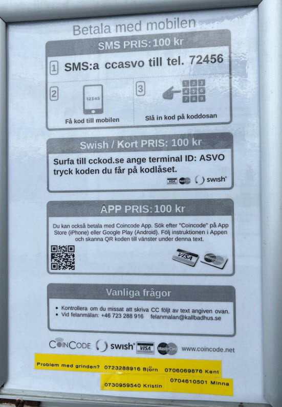

Entréskylt – betala & kom in
Nedan ser du skylten vid grinden – klicka för en uppdaterad digital version

Nuvarande skylt vid grinden
↓
Uppdaterade digitala versioner – samma info, korrekta priser & ny betalmetod
Entréskylt – betala & kom in
Nedan ser du skylten vid grinden – klicka för en uppdaterad digital version

Nuvarande skylt vid grinden